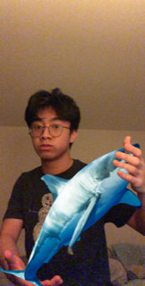

Critter Johnson
⤞HackBI IV Leader⤝
Oh, look, it's Christopher Johnson our great leader!!! He runs the whole show. He's the most organized person I know (he definently did NOT submit his picture 5 months late). He's wearing a HACK shirt because he's been to many hackathons. Also, make sure to ask him if he surfs when you see him, he loves it (tell him Lian sent you).

Jomar Roque
⤞Admin Team Leader⤝
Jack Ambery isn’t the only fisherman in town. But before you take up your pitchforks and complain about how “He’s holding a great white shark,” asking me to “At least make it believable,” entertain the idea of a reality where Jomar Roque is actually 20+ feet in size. Wouldn’t the world be all the better for it?

Cameron Arnold
⤞Admin Team Leader⤝
Cameron is a junior at BI and also one the leaders of the HackBI IV Admin team! Her favorite food is the snack that smiles back and Baby Mario is her go to Mario Kart character. Worried about The Office leaving Netflix next year? Well, you’re in luck! Ask her to recite Season 4 Episode 13 (the iconic “Dinner Party”) —she knows the entire episode from memory! Catch her at the Women in Science workshop!

Lian Amond
⤞Admin Team⤝
Lian is a senior at BI and is programming the Meet the Team page. Some wise words from Lian: “I’ve never done anything with computer science but I’m figuring it out.” (mood) Nevertheless, A+++ for effort!
Lian is a senior at BI and is programming the Meet the Team page. Some wise words from Lian: “I’ve never done anything with computer science but I’m figuring it out.” (mood) Nevertheless, A+++ for effort!

Joseph Charuhas
⤞Admin Team⤝
Joseph is a junior at BI and is also in charge of the HackBI website! Joseph makes electronic music on his computer—will HackBI IV be having its very own DJ? Looks like we might be needing one (see Natalie and Sarah’s bios). When he’s not raving or contemplating life at the Potomac River, you can find Joseph at the HTML / CSS or JavaScript workshops!

Natalie Ramirez
⤞Admin Team⤝
Natalie is a junior and is helping run the Beginner Java and Alice workshops! She has experience in Java, HTML, and CSS. Catch her on the slopes, on the field, or in a pool— she loves snowboarding, field hockey , and swim! Natalie can rap all of “Can’t Hold Us,” and may be one of the contenders for HackBI IV’s official rapper (see Sarah’s bio).

Matt Lorenzo
⤞Admin Team⤝
BrotherBear, aka Matt, is a senior at BI and is also a part of the Admin team. (No he does not know why his username for almost EVERYTHING is BrotherBear, but according to Matt “we’ll roll with it”). He’s currently on that Valorant grind and claims to have only lost one game of NBA 2k ever. Anyone looking to challenge that? Stop by the GitHub workshop! He also claims the title as “Biggest Uzi stan you will meet” and loves sneakers. (Although you can’t see them in this picture).

Maeve Chawk
⤞Admin Team⤝
Maeve is a junior at BI and will be running the Alice and App Inventor workshops! More importantly, “I have really soft hair :)” -Maeve 2020.

David Burdick
⤞Admin Team⤝
This is David’s second HackBI, and this year he’s part of the Admin team. His favorite color is blue (baby blue, to be specific) and he helped make the workshop section of the website. David is also proud to admit he likes pineapple on pizza “(don’t judge me)”… you can debate what pizza toppings are valid if you stop by his App Inventor workshop!

Jack Ambery
⤞Logistics Team Leader⤝
When Jack isn’t coding away, you can usually find him fishing at his secret spot, climbing a mountain, or cooking a meal over a fire. This might lead you to believe he’s a true outdoorsman, but really he just needs privacy so he can plan his coup on Critter’s regime.

Kieran Kelleher
⤞Logistics Team⤝
Kieran, a junior at BI and proud member of the Logistics team, seems to live a double triple life as a Minecraft Gamer™, business man(?) and elite soccer and track player. Here, you can see Kieran in one of his many disguises. Have any questions about HackBI IV’s very own Clark Kent? Make sure you stop by the Minecraft Command Blocks workshop!

Joe Lis
⤞Logistics Team⤝
Joe Lis has a knack for being in the right spot at the right time (several broken limbs not withstanding). I mean, just look at that gorgeous sunset! If you need to find a friendly face at Hack BI IV, just look for Joe. He hates being known as the tall, skinny kid, but if you see a tall, skinny kid, there’s a good chance that’s him.

Laura Segura
⤞Logistics Team⤝
Laura Segura is a senior at Bishop Ireton High School (no way 😮) and is a member of the XC and track teams despite having a deep hatred for running. She also really likes Ethiopian food and Colombia (as a whole). She is biological twins with Wilson from Castaway (identical obv) and her two goals in life are to speak a language from every continent (she had three down so far) and try a dish from every country. Talk to Laura Segura about every Netflix series she’s watched at the Snap Workshop! Did I mention she likes Colombia? According to Laura: “I’m the Hispanic version of Sam lee.”

Arthur Seng
⤞Logistics Team⤝
Arthur Seng is a weird dude. No judgement, just facts. The glue stick hurling, water bottle chugging, plastic bag parachuting madman is about as close to the prototypical “ideas guy” as you can get. Be on the lookout for him and his dad jokes at Hack BI IV!

Dagny Scannell
⤞Logistics Team⤝
Dagny is a senior at BI and likes belting Broadway songs. If you’ve ever been to a BITA show, you can definitely confirm this! Have you ever wondered what would happen if you let a bunch of crickets loose on a skyscraper? Well don’t ask Dagny because she’s terrified of both crickets and heights. To end on a better note, (haha see what I did there) Dagny is 100% confident in the fact that Disney really is the happiest place on Earth.

Samantha Lee
⤞Logistics Team⤝
Sam Lee, Logistics. AKA Laura Segura 2: Electric Boogaloo. While Sam may think she’s the same person as her best friend, her British accent and her wildly washed out look are a dead giveaway when it comes to telling the pair apart. Come visit her in person, where she can explain to you who Laura Segura is and why she’s in this bio!

Caleb Finamore
⤞Marketing Team Leader⤝
Caleb Michael Finamore is a senior at BI and is the leader of the Marketing Team! As you can see, Caleb prefers extra BIG Cheez-Its and knows how to strike a pose. (📸 creds to an undisclosed source). When he’s not using Photoshop, you can find Caleb on that Rocket League and Minecraft grind. He’s also one of Ireton’s Finest™ BIBVS goalies—you can’t miss him on the field. Like. Literally. The highlighter yellow and pink kits with matching bright orange cleats will forever be iconic. If you want to see his graphic design skills in action make sure to visit the Advanced Photoshop and Design Principles workshops!

Alex Cuenco-Olaya
⤞Marketing Team⤝
Alex is a senior at BI. As a member of the marketing team this year, she’s made the sponsorship packet and, as you can tell from the photo, is currently writing these bios! (Dark mode FTW). If you were in her AP Lang class you’d know how much she loves Minecraft—and Photoshop! Mrs. Briody’s Image Editing class? 10/10 would recommend. She also thinks it’s kind of weird to write about herself in third person so I’m just gonna stop here. Hope everyone liked their bios!

Caroline Czarnecki
⤞Marketing Team⤝
Caro is a senior at BI and is this years SCA President (congrats!!). This is her first year participating in HackBI and is part of the marketing team! She loves fishing, painting, and can kickbox (so don’t mess with her.) If Caro was an emoji she’d def be 🌞. Make sure to find Caro at the Photoshop workshop!

Sarah Fleming
⤞Marketing Team⤝
Sarah is a junior at BI and loves soccer, swim, and snowboarding. (Hmmm. I wonder if she’d get along with Natalie 🧐) Oddly enough, they both claim to know all the words to “Can’t Hold Us,” (a certified banger, I approve.) Should we expect a rap battle at HackBI IV? Either way, this is her second year on the team and she’s really excited!

Julia Lin
⤞Marketing Team⤝
Julia is a senior member of the marketing team. The friendly face behind the HackBI instagram page, she spends her time off the net visiting Spain, playing tennis, and falling asleep in Mr. Rauer’s history class.

Janet Le
⤞Marketing Team⤝
She’s just a small-time girl living in a lonelyyy worlddd—wait wrong intro. Actually, Janet’s just a girl who’s a part of the marketing team for Hack BI IV! You’ll see her at the VEX competition or wandering around the school searching for coffee. Janet also has the best handwriting and calligraphy skills at Ireton. Wanna see for yourself? Come visit the Design Principles workshop!

Gabby Nguyen
⤞Marketing Team⤝
Gabby is a junior at BI and can pretty much do it all! She plays field hockey for BI and for a club, swam with a USA team competitively for 9 years , and plays the clarinet, piano, and bass guitar. As a member of the marketing team, she’s putting her photographer skills to good use! Fun fact: Her interest in coding began in the sixth grade!

Courtney Quinn
⤞Middle School Team Leader⤝
Courtney is a junior at BI and is the leader of the Middle School team this year! This will be her second year as a part of the HackBI team. I’m sure she’s super excited! Some super fun facts about Courtney (that could be related?): she’s cracked her head open and is left handed! If you want to hear the backstory then swing by the Women in Science workshop!

Matthew Burdick
⤞Middle School Team⤝
Matthew is a senior at BI and is part of the Middle School team! His favorite food is pad Thai and his favorite color is green. Matthew may or may not be part of the other pair of twins on the HackBI IV team. (and may or may not be the twin with a better taste in foods. (Sorry David.)) “Aliens are going to conquer the earth”- Matthew Burdick 2020

{kind=link}